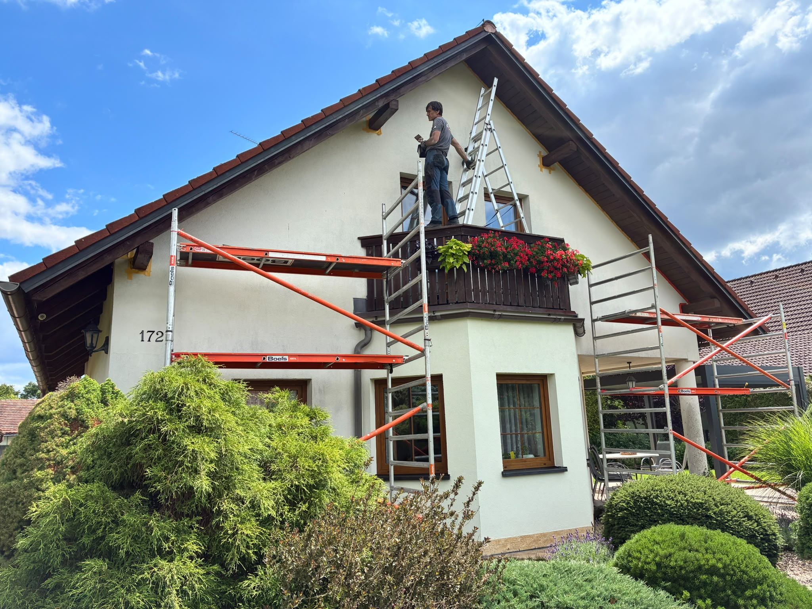

Úpravy a opravy
Práce na stávajících objektech podle potřeb jejich vlastníků a správců.

Stavební práce pro opravy, úpravy i nové záměry. Rozsah vždy vychází z konkrétního objektu a toho, co potřebujete vyřešit.
Poptat stavební prácePři plánování stavebních prací je důležité znát stav objektu, rozsah zásahu a požadovaný termín. Tyto informace nám pomohou domluvit vhodný postup.
Práce na stávajících objektech podle potřeb jejich vlastníků a správců.
Stavební zásahy ve střešní části objektu podle konkrétního zadání.
Úpravy a opravy vnějších částí budov.
Stavební práce, které mohou navázat na přípravu terénu nebo práce ve výšce.
Jiný postup vyžaduje rodinný dům, jiný složitější stavební zásah. Pošlete základní informace a fotografie místa; další postup se domluví podle rozsahu prací.
Popsat své zadáníPošlete místo, přibližný rozsah a termín. Společně upřesníme další postup.